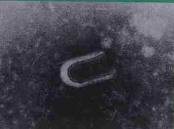

水稻黄矮病
病害别名：黄叶病、暂黄病
为害部位：叶子
病害性质：一般病害
病原：水稻黄矮病毒（RYSV）水稻黄矮病病毒粒体-子弹形
病害表现：矮缩、花叶、黄枯为本病的主要特征.多从顶叶下1-2叶开始发病，病斑从叶尖向基部发展，叶肉鲜黄色，叶脉绿色，病叶与茎秆夹角增大，叶鞘仍为绿色株形松散病株显著矮缩，不分蘖，多不能抽穗。
 水稻黄矮病田间症状
水稻黄矮病田间症状
 水稻黄矮病传毒介体黑尾叶蝉
水稻黄矮病传毒介体黑尾叶蝉
发病规律：该病由黑尾叶蝉、二点黑尾叶蝉和二条黑尾叶蝉传播。能连续传毒，终身保毒，不经卵传毒。病毒主要保存于虫体内越冬，次年再传染。水稻在苗期和返青分蘖期最易感病，一般早稻发病轻，而晚稻受害重。.
病害防治:1．农业措施 因地制宜选用抗病品种，淘汰感病品种。合理安排作物布局，实行连片种植。改进栽培管理措施，加强肥水管理，适时晒田，清除田边杂草。2．药剂防治 病害流行的秧田用3％呋喃丹颗粒剂l.5－2千克，拌细土2O千克，在稻谷播种后撒施。选用50％混灭威乳油每666.7平方米用100毫升，或20％叶蝉散乳油每666.7平方米用150－200毫升，对水40－50千克，在秧苗露青后每隔 5－7天施药1次，共施2－3次。